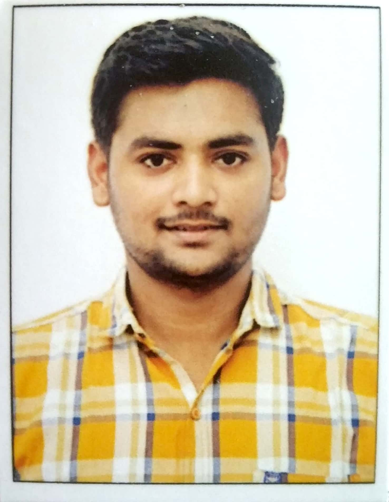

NIKUNJ R. DANKHARA

Address:
|
Contact details:
|
Surat
|
Contact No : XXXXXXXXXX
Email : XXXXXXXX@gmail.com
Linkedin :Nikunj Dankhara
|
Career objective
To make a sound position in an organization and work enthusiastically in team to achieve
goal of an organization with devotion, hard work and honesty.
Strengths
- Quick learner
- Hard working
- Enthusiast
- self confident
Computer skills
- Programming Language: Python, C, JavaScript, Arduino , Shell script, HTML & CSS
- Operating systems : Windows 10, Linux (Kali 20.x /Ubuntu 18.x)
- IDEs : PyCharm, CodeBlock, Eclipse, Arduino, MATLAB and SciLab, PopSql
- Cloud : Amazon Web Service (EC2 - micro Instance, S3 Bucket)
- Tools : Oracle Virtual Box, VMWare Workstation 15 player
- REST APIs : Postman, Curl
Professional certification:
- NPTEL certified Python Developer By IIT Madras – Silver Certification with 79%
- Digital Forensics using Autopsy certified by BASIS Technology
- MATLAB 10 days’ workshop
- Skill enhancement webinar on AMAZON WEB SERVICE( AWS ) ,BIG DATA , MACHINE
LEARNING,ARTIFICIAL INTELLIGENCE & IT’S APPLICATION
Education qualification :
| Educarion |
University |
Marks |
| 8th |
GTU |
Pursuing |
| 7th |
GTU |
Pursuing |
| 6th |
GTU |
7.45 |
| 5th |
GTU |
7.40 |
| 4th |
GTU |
7.30 |
| 3rd |
GTU |
7.11 |
| Diploma |
GTU |
8.14 |
| 10th |
GSEB |
75.66 |
Project Work :
Title: Speed Control of induction motor using variable frequency drive (VFD)
We are working on speed control of Induction motor by changing the frequency using
VFD. We simulate this project in MATLAB Simulink to see the graphical representation
of the speed, voltage, current, and frequency with respect to
time.
We also wrote the
Arduino uno ATMEGA328 microcontroller programming to generate the pulse with some
delay to redirect output of program to the drive as input. For virtual connection of the
circuit we used the open source software
FRITZING and TINKERCAD.
Spors & extra curricular activites :
- Participated in kabaddi tournament held by Gujrat government(Khel - mahakumbh)
- Participated in I-maze 2019 Techfest held at GCET
- Participated in GCET Premier league held at GCET
- Participated in chess tournament held at GCET
Industrial Visit :
- Visit at Wanakbori Thermal power station(2270 MW) , Kheda
- Visit at GECTO 66KV and 220KV substation
- Visit at Sardar sarovar hydro power plant(1450 MW) , Bharuch
- Visit at Electronic & quality Development Centre( EQDC ) , Gandhinagar
Personal Detail :
| NAME |
: Nikunj Rameshbhai Dankhara |
| Date of birth |
:**/**/**** |
| Gender |
:Male |
| Language known |
:English,Hindi,Gujrati |
| Nationality |
:Indian |
| Hobbies |
:Reading books,playing chess & cricket,lear computor technology |